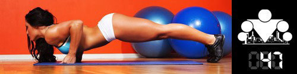

Кардиотренировки. Мало кому они нравятся, но все слышали о том, как они необходимы для того, чтобы привести себя в форму.
Ведь если много-много бегать или долго-долго крутить педали на велотренажере, то обязательно сбросишь лишние килограммы и станешь стройнее.
Разве не так пишут в интернете или на страницах глянцевых журналов, иными словами, в главных источниках информации о фитнесе для большинства людей.
Сегодня вы узнаете, что всё как раз совсем не так, а представленная выше информация является одним из типичных заблуждений по поводу кардио тренировок!
Вообще существует довольно много мифов, касающихся аэробных нагрузок, поэтому мы рассмотрим только 7 наиболее часто встречающиеся из них:
Миф №1: Аэробные нагрузки это все, что нужно, чтобы потерять лишний вес.
Чтобы потерять лишний вес необходимо создать дефицит калорий (то есть тратить больше калорий, чем получать). Если у вас нет диеты или режима питания,
а вместо этого вы хаотично потребляете продукты из холодильника, то как бы много вы не тренировались, лишний вес от вас никуда не уйдет.
Миф №2: Аэробные нагрузки низкой интенсивности способствуют большей потери лишнего жира, чем высокоинтенсивные тренировки.
Низкоинтенсивные тренировки задействуют меньше мышц, чем высокоинтенсивные тренировки, кроме того, они в гораздо большей степени задействуют медленные мышечные волокна, чем быстрые.
А ведь именно быстрые дают вам красивые упругие мышцы.
И хотя считается, что в ходе низкоинтенсивных тренировок организм начинает использовать жир в качестве источника энергии, стоит помнить и о том, что он в той же степени учится запасать жир,
чтобы в дальнейшем использовать его в качестве энергии. И это замкнутый круг.
Миф №3: Кардио нагрузки это потеря времени.
Если у вас сложилось впечатление, что аэробные нагрузки бесполезны, то вы опять не правы. Они очень важны для всех, поскольку тренируют вашу сердечно-сосудистую систему,
дыхательную систему и выносливость! Не самые последние по полезности качества, верно?
Миф №4: Чем больше кардио нагрузок – тем лучше для похудения.
Кардио нагрузка с течением времени становится все менее и менее эффективными за счет того, что ваш организм адаптируется к ним и начинает работать (и использовать свои ресурсы) более эффективно.
Если ваша цель - тренировка выносливости, ССС и дыхалки, то да. Если же вы хотите похудеть и привести себя в форму, то следует поискать более эффективные способы.
Миф №5: Аэробные нагрузки занимают много времени.
Поскольку многие думают, что "чем больше кардио, тем лучше", то они считают, что аэробные тренировки будут отнимать у них много времени. На самом деле это не всегда так, и, в среднем,
продолжительность кардио тренировки не превышает продолжительность силовой.
Правда,
ogrudko напоминает о том, чтобы добиться чистого расхода энергии скажем в 100ккал, бегать нужно 20 минут (условно), а подтянуться 20 раз (тоже условно).
То есть сжигание одного и того же количества калорий в случае кардио займет больше времени, чем в случае силовых тренировок.
Миф №6: Самый лучший вид аэробной нагрузки это бег.
Бег является самым распространенным видом кардио нагрузки, и это заставляет многих думать, будто он является самым лучшим. Но это не совсем так.
Для вас самым лучшим вариантом будет тот, который будет вам нравится и будет безопасным для вашего здоровья.
Далеко не все могут бегать в связи с состоянием собственного здоровья, но из всего многообразия возможных аэробных активностей можно выбрать те,
которыми вы сможете заниматься на регулярной основе.
Миф №7: Кардио тренировки опасны для суставов.
Выше я уже писал о том, что существует много вариантов аэробных активностей, которые по своей сути не предполагают ударной нагрузки на суставы (в отличии от бега).
Например велоспорт, гребля, ходьба по лестницам и т.д. Не все аэробные нагрузки подразумевают возможность получения ортопедической травмы.
Занятия велоспортом, греблей или на лестнице-степпере по определению безударны (не имеют тяжелого воздействия на суставы).
Кроме того, многие связывают травмоопасность кардио тренировок с тем, что их нужно выполнять в безумных количествах, но ранее мы уже опровергли этот миф.